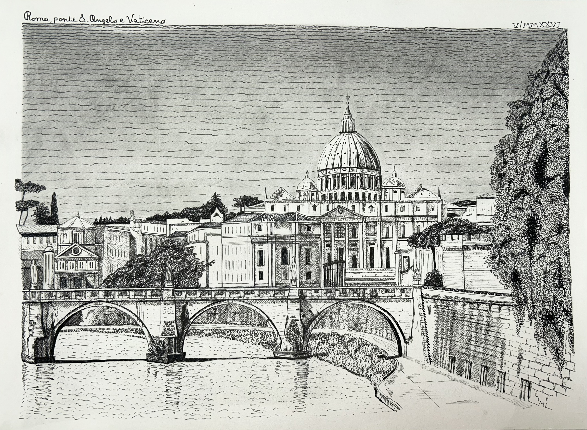

Michele Lorandi

Il disegno a china rappresenta uno scorcio caratteristico della città di Roma. In primo piano il ponte Sant'Angelo che attraversa il Tevere e sullo sfondo la maestosa cupola della Basilica di San Pietro in Vaticano.
← Torna alla galleria